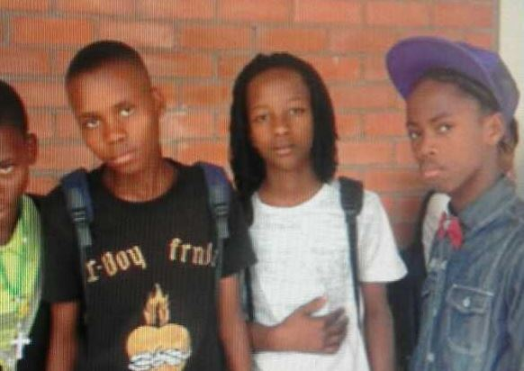

Lihle Theo "Rasta" Mdikili (born 20 February, 1998) is a 19 year old Computer Programmer and Robotics enthusiast.
Lihle Theo "Rasta" Mdikili (born 20 February, 1998) is a 19 year old Computer Programmer and Robotics enthusiast. He was given an opportunity to be one of 15 interns at ABSA Aliens. And though he never really played much sports, he played a bit of cricket and was one of his school's team leader on thier robotics team.
20 Feb 1998 (19 years)
Cape Town, South Africa
Coder, Programmer
Known for being a Coder, Programmer, Robotics team leader
Mr
 Lihle started coding or writing code since grade 9, in high school. Though the programming langueges and IDEs he used, at that time, weren't as complicate and complex, it was one of the things that drove him and ended up making him wanting to do whatever that was related to computers and writing code.
Well that was also the same year where he joined the school's robotics team (Majestix), to which they won awards on. Although the trips to provincial were a plus, he also enjoyed writing code and creating new software more than anything.
In grade 10, he was inroduced to Java by his IT teacher, Mr Mass Makhumbe (from the Centre of Science and Technology. It's safe to say that that was the most important year of this yongling, to be honest, that's when he discorevered fire and the limiteless possibilities. Since then, even though he did avarage in Physics, he made sure he aced IT, without neglating his Robotics team mates of course.
In matric he was chosen by his IT teacher to be one of many students from his school to go and do a six month course at an Oracle Acamedemy branch, which was based in Woodstock, The Barn.
Lihle was one the luck 15 from a number of 45, to be given a great opportunity of having a six month intership with Absa Aliens, Cape Town. Though he only went there twice at the Alien offices, he has gained so much, from how things work, to how people conduct themselves in their work spaces.
4 Years
6 Medals and 4 Trophies
Provincials, National
Team member, Team Leader, Mentor
Programmer, Builder
This was very brief, and with no awards
Bowler, Batter
Provincials
This was very brief, and with no awards
2 Years
Provincials
"In high school I tried my best to be dynamic and just try all that I could've done at that time. Honestly I feel like: if only I had enough time or more years, maybe I could've done or achieved way more than what I did." - This is only some of the things Lihle Mdikili was able to do, or say, accomplish in his five years in high school.
ltmdikili@gmail.com